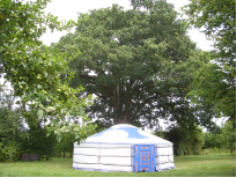
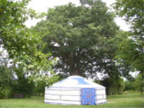
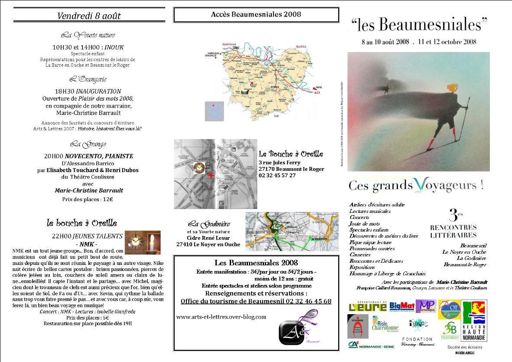
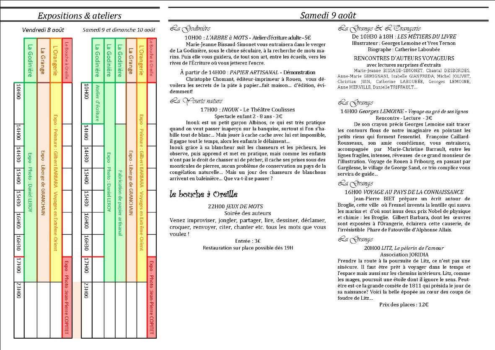
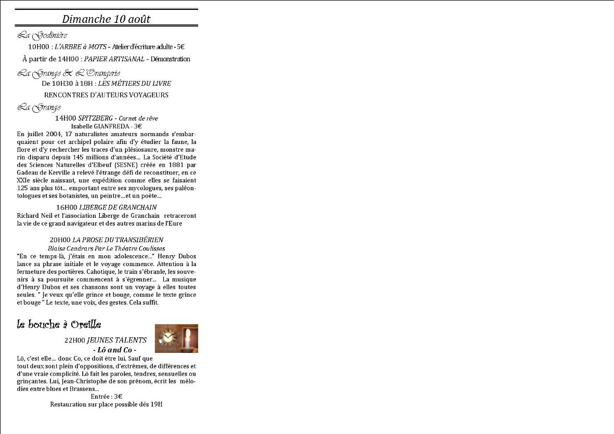

|
Le Chêne séculaire de La Godinière |

La Yourte sous |
Arts et lettres
|
|
|
|||
La Ferme de La Godinière
27410
Le Noyer en Ouche
Tel : 02.32.44.46.71
Carte de l'Eure - situation de La Godinière
dernière mise à jour de cette page : 27.03.2011
Notre adresse web : http://cidre.rene.lesur.club
|
ATTENTATS LITTERAIRES 2011
|
|
Les Beaumesniales 2008 les 8, 9 et 10 Août 2008 3es Rencontres Littéraires
organisées par l'Association Arts et Lettres à
Beaumesnil Château de Beaumesnil : La Grange, L'Orangerie, Le Grand Salon Le Noyer en Ouche : Ferme de La Godinière Beaumont le Roger : Le Bouche à Oreille
Avec la participation de Marie-Christine Barrault Françoise Caillard Rousseaux,Georges Lemoine et le Théâtre Coulisses |
|
L'association Arts et Lettres à Beaumesnil propose :
Les Beaumesniales 2008 Dimanche 12 Octobre 2008 : Salon du Livre Château de Beaumesnil Office de Tourisme de Beaumesnil : 02.32.46.45.68 Contact : 06.81.87.12.08 - e-mail : artsetlettres1@aol.com www.arts-et-lettres.over-blog.com |
Renseignements :
Office de Tourisme de Beaumesnil 02.32.46.45.68
Les moments du programme qui auront lieu à La Godinière
|
Le Chêne séculaire de La Godinière |

La Yourte sous |
|
Vendredi 8 Août 2008
de 10H00 à 17H00 : Expo photo : Daniel Leroy
sur un sujet en rapport avec les arbres...
Entrée Libre
à 10H30 et à 14H00 : INOUK Spectacle enfant
Représentations pour les centres de loisirs |
Concours d’écriture Beaumesniales 2008
A partir d’une
photo de l’exposition : « Voyage entre deux mondes »
visible à la Godinière du 8 au 10 août 2008
ou à partir des photos de l’exposition disponible sur le site de Daniel Leroy :
Voir conditions détaillées en bas de page
|
Samedi 9 Août 2008
de 10H00 à 17H00 : Expo photo : Daniel Leroy
sur un sujet en rapport avec les arbres...
Entée Libre
La Yourte Nature
sous le Chêne de la Godinière
Entrée sur Place ou Réservation auprès de l'Office de Tourisme :
02.32.46.45.68
A partir de 14H00 : PAPIER ARTISANAL
Christophe Chomant, éditeur-imprimeur à
Rouen,
La Yourte Nature sous le Chêne de la Godinière
17H00 : INOUK
Inouk est un petit garçon Albinos,
Inouk grâce à sa blancheur suit les chasseurs
et les pêcheurs, les observe, |
Carte de l'Eure - situation de La Godinière
|
Dimanche 10 Août 2008
La Yourte Nature sous le Chêne de la Godinière 10H00 : L'Arbre à Mots Atelier d'écriture adulte Participation 5€ - durée 3 heures - maxi 10 personnes
Entrée sur Place ou Réservation auprès de l'Office de Tourisme :
02.32.46.45.68
A partir de 14H00 : PAPIER ARTISANAL Christophe Chomant, éditeur-imprimeur à Rouen,
|
Les éléments du programme complet ci-dessous peuvent être imprimés.
ATTENTION : Vendredi, Inauguration à 18H00 dans l'Orangerie
|
 |
ATTENTION : Samedi, la soirée
LITZ se tient au Château dans le Grand Salon
|
 |
Carte de l'Eure - situation de La Godinière
|
 |
Concours d’écriture Beaumesniales 2008
A partir d’une
photo de l’exposition : « Voyage entre deux mondes »
visible à la Godinière du 8 au 10 août 2008
ou à partir des photos de l’exposition disponible sur le site de Daniel Leroy :
Vous rédigerez un texte de 2000 (deux mille) signes* MAXIMUM, dans une forme libre (poème, prose, nouvelle…)
Le texte devra être dactylographié et devra reprendre
- vos nom, prénom,
- âge
- adresse,
- numéro de téléphone
- adresse email (si vous en avez une)
AINSI QUE :
- Le nombre de signes composant le texte
Il devra soit :
- être envoyé à l’adresse :
Arts & Lettres – Concours d’écriture
Isabelle Sacré
5 & 7 Bd Parissot
27170 Le Tilleul Othon
- être déposé à l’office du tourisme de Beaumesnil
- être déposé dans l’urne prévue lors de la manifestation Le Livre au Salon organisée le 12 octobre 2008, au Château de Beaumesnil.
La date limite de réception des textes est le 12 octobre 2008.
Chaque auteur peut proposer au maximum deux textes. Un seul pourra être retenu.
Les textes lauréats composeront un recueil qui sera présenté lors de l’édition 2009 du Livre au Salon.
Les lauréats seront invités et recevront un recueil.
Ce concours n’est pas doté de prix mais les auteurs des 3 textes les mieux considérés, se verront proposer l’édition d’un recueil (un recueil pour les trois auteurs et non un recueil par auteur) présentant plusieurs de leurs écrits et financé par Arts & Lettres.
Arts & lettres se réserve le droit de proposer l’édition d’un recueil « Espoir » composé de textes d’auteurs non retenus dans les trois premiers mais présentant de vraies dispositions à l’écriture.
TOUT
TEXTE NE REPRENANT PAS LES INFORMATIONS
CITÉES PRÉCÉDEMMENT SERA AUSSITÔT ÉLIMINÉ
Carte de l'Eure - situation de La Godinière
Consultez le Calendrier des manifestations
|
Retour
Les Produits
ou
Accueil ou
Plan du
site |
Ecrivez nous pour donner votre impression et votre suggestion, merci.
Ma messagerie est protégée par Avast
Conception et Réalisation : René Lesur